Studio One 2 is a very powerful Digital Audio Workstation with many features, but it can be daunting to jump in and start creating music, with how complex the software appears. The goal of this course is to get you up and running, ready to create.
First, plug in all of your midi/recording devices, then start up Studio One 2. You'll need to open up a new song. Do this by clicking through the song setup wizard.
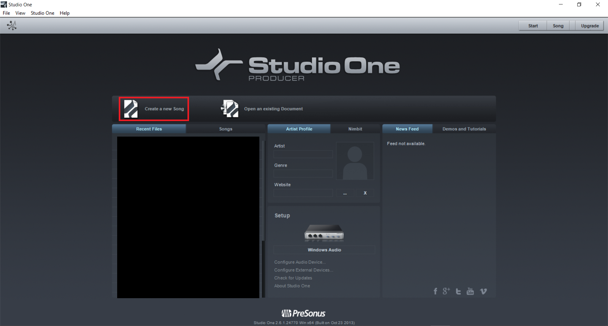In the window that opens, you'll find you can select a preset on the left (if you wish), but for the
purposes of this tutorial we'll stick with an empty song.
You may also set the name, tempo, and time
signature here.
Now that you have your song file open, you may find that there are many ways to start. Here, we'll walk through each of them. Start by clicking the "Add Track" button, pictured below.
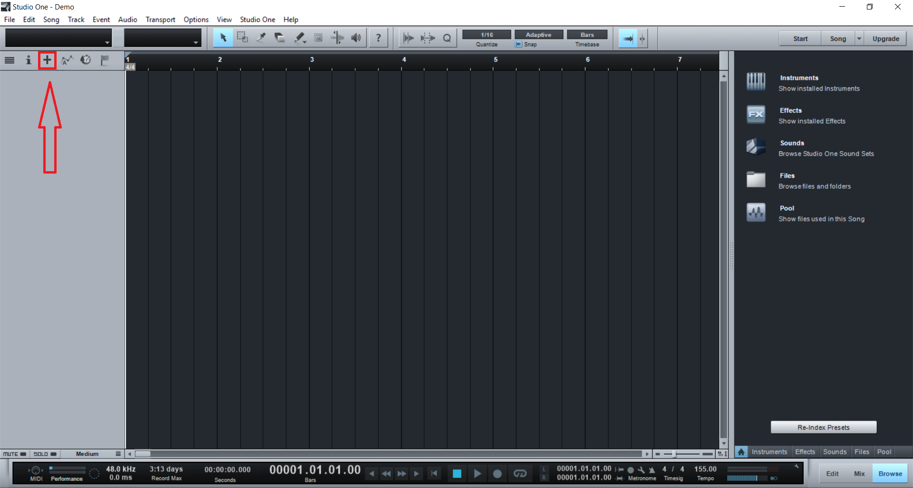Next, give your track a name, and choose what type you want. You'll probably want either Instrument or Audio.
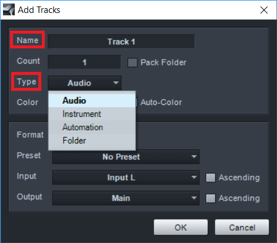If you've selected an audio track, you should be ready to go! Just click record, and get recording! If things don't work, make sure the buttons highlighted below have been enabled.
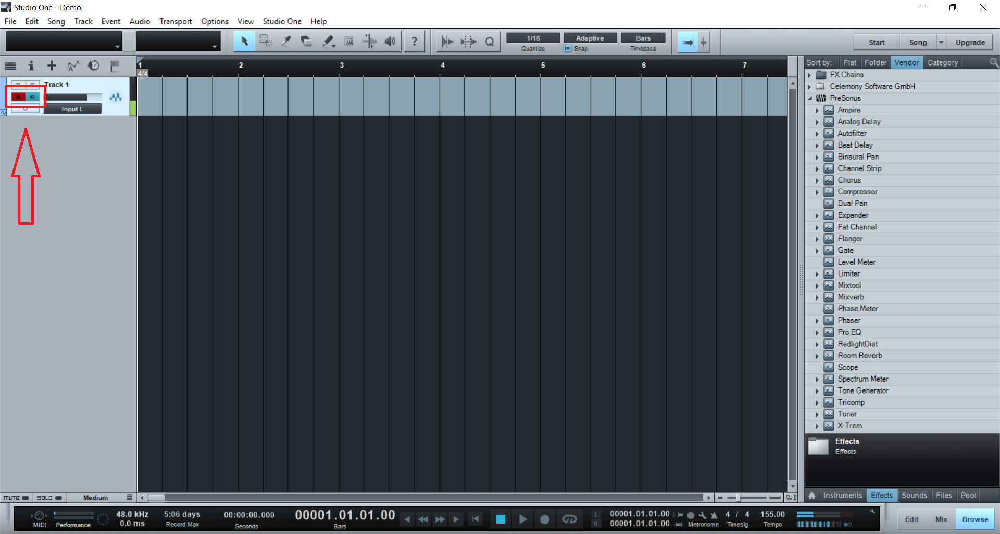If you've selected an instrument track, there is a bit of setup required. You need to select a virtual instrument. You can do this by selecting "Instruments" from the right hand panel...
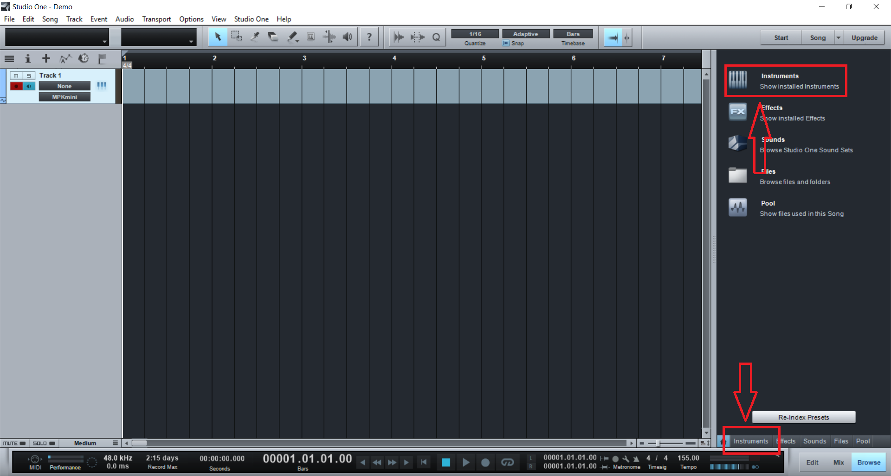...and dragging your desired instrument to the track.
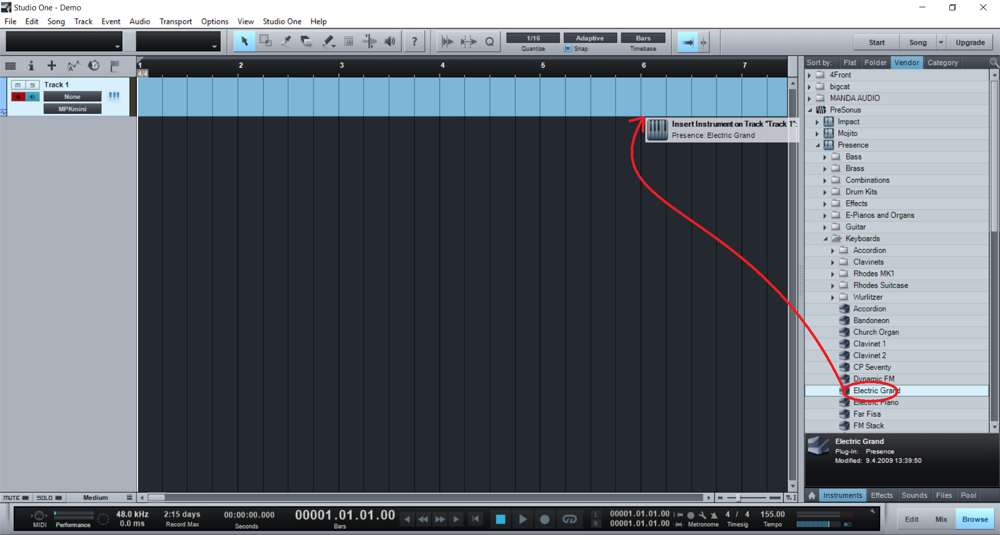Once you have your instrument, you can record using a midi controller if you have one (it will work the same way as recording to an audio track - see above), or you can double-click on the track and drag the end of the created event to make it longer...
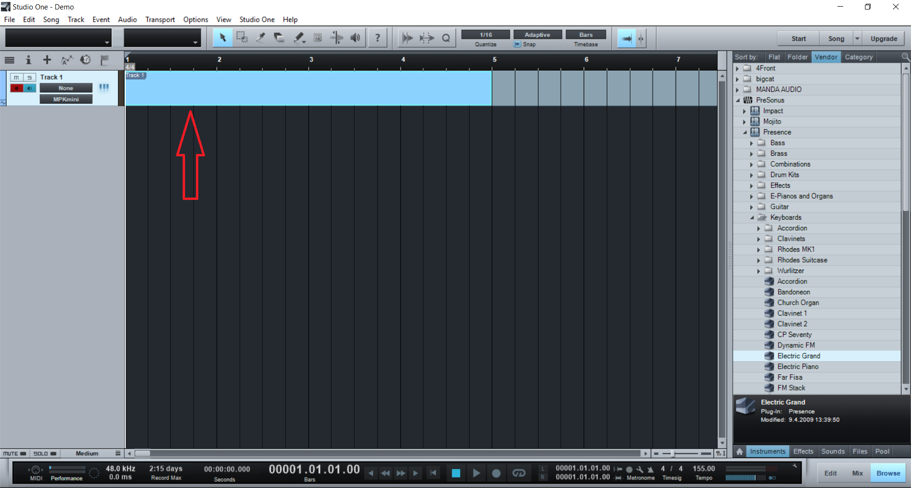...and double-click the event to open the "edit" window. In the edit window, you can use the cursor tool (press 1) to allow double-clicking to add or remove notes, or you can use the 6 custom tools highlighted below for their (self-explanatory) purposes.
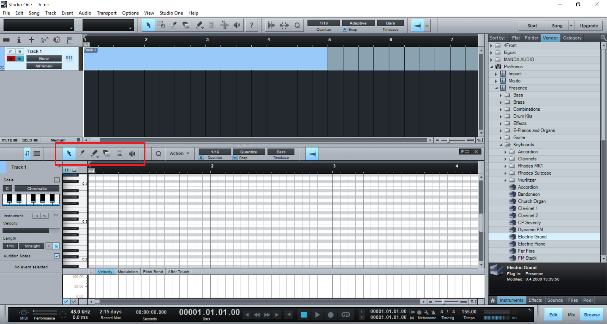Once you have your track assembled, you will want to export it to an audio file. Do this by opening the marker track...
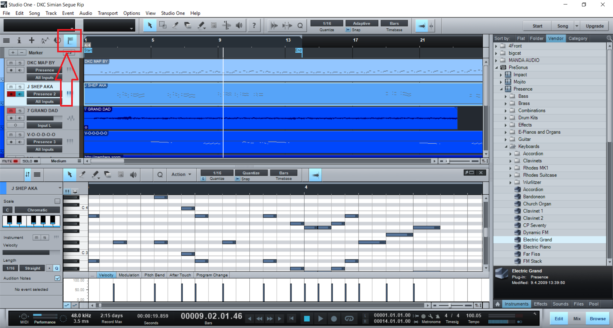...moving your "Start" and "End" markers to their corresponding spots in your track (you may have to scroll awhile to find them)...
Next, navigate to song->Export Mixdown...
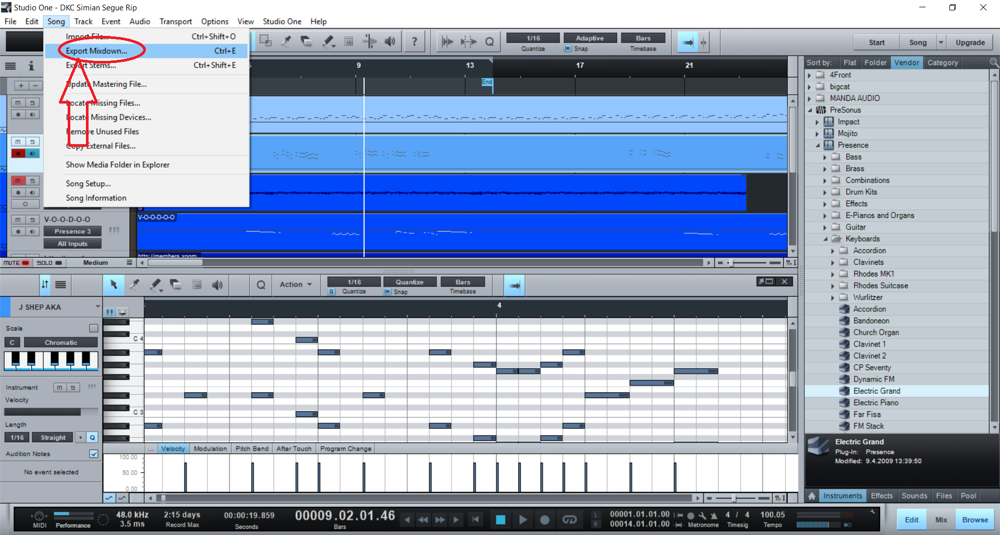...select "Between Song Start/End Marker", and optionally rename the file at the top of the window and/or select a different file location. You can also optionally change your export file format. When you're ready, hit "Ok" to export.
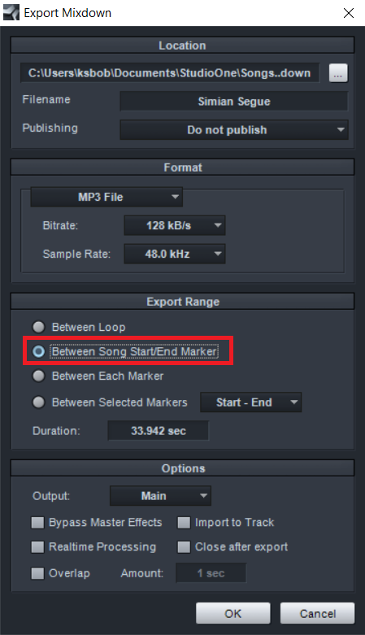Congratulations! You now know the basics of creating a Studio One 2 song! If you need more help, you can press Alt+F1 within Studio One 2 to open the reference manual, or use the online Presonus forums to help you. Enjoy your music-making!